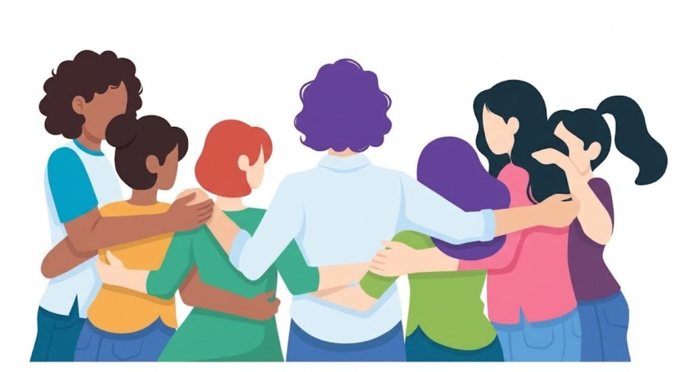

Somos 10 mujeres profesionales de distintas disciplinas, unidas por un mismo objetivo y una visión transformadora. Combinamos perfiles únicos e innovadores con un motor imparable: generar un impacto real. Somos el talento que el futuro necesita, listas para aportar criterio en cada proyecto. Descubre nuestras trayectorias y suma valor a tu equipo.
